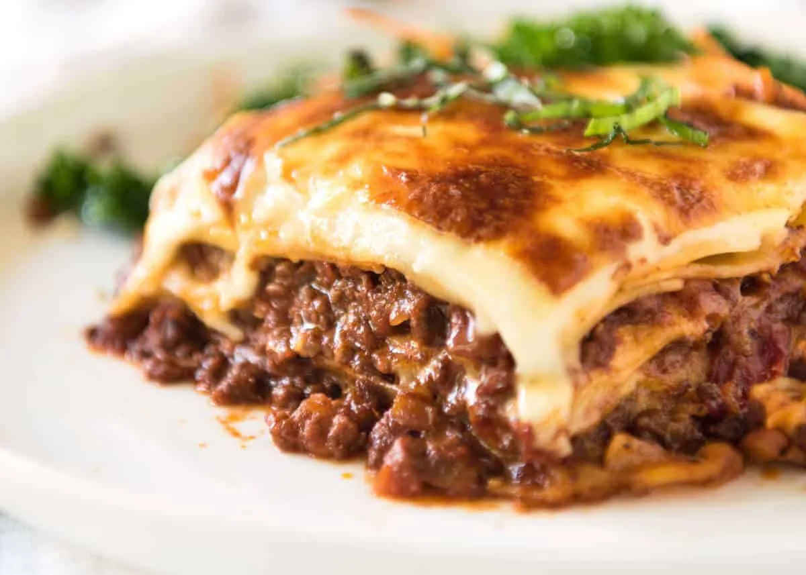

Lasagna

Description:
Paella, in Spanish cuisine, is
a dish of saffron-flavoured rice cooked with meats,
seafood, and vegetables.
Ingredients:
- saffron strands
- 1 chicken stock cube
- 3 tbsp olive oil
- 125g chopped chorizo
- 500g skinless chicken breasts
- 1 onion
- 3 garlic cloves
- 1 red pepper
- 2 tsp paprika
- 250g Spanish paella rice
- 4 medium chopped tomatoes
- 75g frozen peas
- 250g cooked prawns
- lemon wedge (to serve)
Steps:
-
Stir the saffron strands into 600ml of boiling
water with the stock and set aside to brew.
-
Heat 1 tbsp oil in a large deep frying pan with a lid.
Tip in the chorizo and fry for about 3 mins until crisp
and the oil has been released.
-
Remove the chorizo and drain
on kitchen paper, leaving the oil in the pan.
-
Dice the chicken and stir into the pan and fry over a
high heat for 7-8 mins, or until the meat is
golden and cooked through.
- Transfer the chicken to a bowl and set aside.
-
Pour another 1 tbsp of oil into the pan,
tip in the chopped onion and chopped garlic and
stir-fry for 4-5 mins, until softened and just starting
to colour.
-
Stir in the pepper and paprika with the remaining
tablespoon of oil and stir-fry for a further 1-2 mins.
-
With the heat still quite high, quickly stir
in the rice so it is well-coated in the oil,
then pour in the saffron-infused stock plus 450ml
boiling water, scraping up the chorizo
from the bottom of the pan with a wooden spoon.
-
Return the browned chicken pieces to the pan,
then add the chopped tomatoes. Cover the pan and
cook on a medium heat for 10 mins, stirring once or twice.
-
Scatter the peas, prawns and fried chorizo over the top,
cover again and leave to cook a further 5-10 mins,
or until the rice is just cooked and most of the liquid in the
pan has been absorbed.
-
Remove the pan from the heat,
put the lid on and leave to rest for 5 mins.
Stir a few times to mix the ingredients,
season to taste and scatter over the chopped parsley.
Serve with lemon wedge.
Return to Home Page